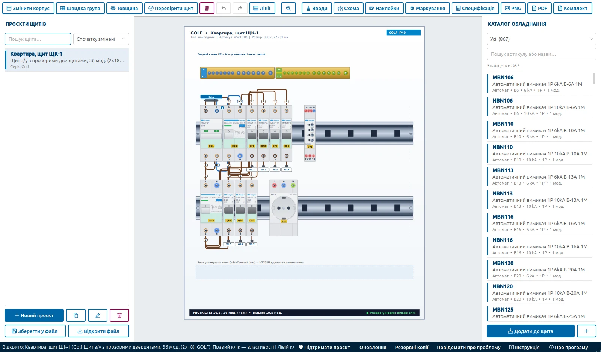
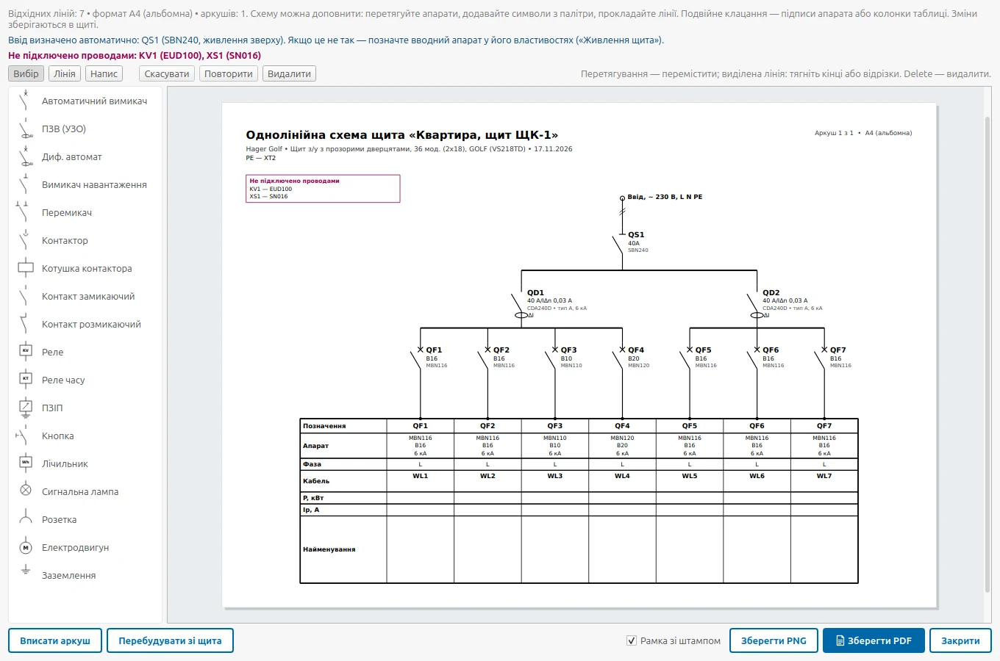

Інструкція користувача
Як зібрати щит у програмі «Конструктор щитів» (Enclosure Designer) — від встановлення до готових документів.
Програма ще в розробці (бета-версія). Можливі помилки, збої та неточності, а окремі кнопки й вікна можуть відрізнятися від описаних тут. Перевіряйте результат і повідомляйте про проблеми на yevhen.zhylenkov@gmail.com.
1. Встановлення
- Завантажте інсталятор (Windows 10 / 11, 64-біт).
- Запустіть файл
EnclosureDesigner-Setup-….exe. Права адміністратора не потрібні — програма встановлюється для поточного користувача. - Якщо з'явиться синє вікно «Windows захистив ваш комп'ютер», натисніть «Докладніше» → «Усе одно запустити». Це звичайна реакція SmartScreen на програми без платного сертифіката видавця.
- При першому запуску прочитайте застереження про неофіційний статус програми й підтвердіть його.
Програма працює без інтернету. Ярлик з'явиться в меню «Пуск» і (за бажанням) на робочому столі.
2. Головне вікно

- Проєкти щитів (ліворуч) — список усіх щитів. Над ним — поле «Пошук щита…» (за назвою, серією чи корпусом) і порядок: «Спочатку змінені», «За назвою», «За серією». Кнопки під списком: «Новий проєкт», копія щита, перейменувати, видалити, «Зберегти у файл» і «Відкрити файл».
- Щит (по центру) — корпус з DIN-рейками, апаратами й проводами. Коліщатко миші змінює масштаб, кнопка «Масштаб» підганяє щит під вікно.
- Каталог обладнання (праворуч) — список категорій, пошук за артикулом або назвою.
- Панель інструментів (зверху): «Змінити корпус», «Швидка група», «Товщина», «Перевірити щит», «Видалити», скасувати / повторити, «Лінії», «Масштаб», «Вводи», «Схема», «Наклейки», «Маркування», «Специфікація», «PNG», «PDF», «Комплект». На вузькому екрані кнопки стискаються до піктограм — назву видно в підказці.
- Рядок стану (знизу) — підказки й повідомлення, а праворуч кнопки «Підтримати проєкт», «Повідомити про проблему» (див. розділ 18), «Резервні копії» (див. розділ 15), «Оновлення», «Інструкція» (відкриває цю сторінку в браузері), «Про програму».
3. Новий щит і корпус
- Натисніть «Новий проєкт».
- Вкажіть назву (наприклад, «Квартира, ЩК-1»), мережу живлення — однофазну чи трифазну, серію щита (Volta, Golf, Vega, Vector, Univers FW…) і конкретний артикул корпусу. У полі «Параметри» видно кількість рядів, модулів і розміри.
- Натисніть «Створити» — щит з'явиться по центру. Комплектні клеми N / PE і тримачі клем, що входять у корпус, програма додає сама. Латунні клеми N і PE щитів Golf і Vega стоять на одному тримачі: перетягніть одну з них — тримач з обома клемами переїде над рейки або під них.
Заготовки і шаблони
У полі «Заготовка» вікна нового щита можна вибрати:
- «Порожній щит» — лише корпус;
- типову заготовку — «Квартира, однофазна», «Будинок, трифазний», «Гараж / дача, однофазний»: вводний апарат, групи ПЗВ з автоматами й фазними шинами KDN знизу стануть у вибраний вами корпус (у шафі Univers FW кожна група — цілком на одній панелі, шина не переходить через стик панелей), а з прапорцем «Розвести апарати заготовки проводами» — ще й з'єднаються проводами. Кожен ПЗВ при цьому отримує свою клему N QuickConnect на тримачі клем (розмір — за кількістю автоматів групи), і його нейтраль заводиться на неї. Далі змінюйте що завгодно;
- власний шаблон — збережений вами щит. Щоб зробити шаблон, клацніть по щиту в списку правою кнопкою → «Зберегти як шаблон…». Новий щит із шаблону — точна копія: корпус, апарати, властивості й проводи. Непотрібний шаблон — кнопка «Видалити шаблон» у вікні нового щита.
Перейменувати щит — F2 або подвійний клік у списку. Видалити — кнопка з кошиком (разом з усіма апаратами й проводами).
Копія щита — кнопка з двома аркушами під списком або правий клік по щиту → «Створити копію щита»: з'явиться щит з назвою на кшталт «Квартира, ЩК-1 (копія)» з усіма апаратами, властивостями й проводами. Зручно для однакових квартир чи поверхових щитів. У тому ж меню — «Перейменувати…», «Примітка до щита…» (див. підписи й примітки), «Зберегти у файл…», «Видалити щит».
4. Апарати на DIN-рейках
Пошук у каталозі
Оберіть категорію у списку над каталогом (автомати, ПЗВ, диф. автомати, реле, розетки…) або введіть
артикул чи частину назви в поле пошуку, наприклад MBN116 або ПЗВ 40. Під кожною
позицією видно характеристику, номінал, полюси й ширину в модулях.
Додавання на щит
- перетягніть апарат з каталогу на потрібне місце рейки; або
- двічі клацніть по ньому, або виділіть і натисніть «Додати до щита» — апарат стане на перше вільне місце.
Програма не дозволить накласти апарати один на одного чи вийти за межі рейки. Ширина враховується точно, з кроком пів модуля.
Переміщення і видалення
Перетягуйте апарат мишею вздовж рейки або на інший ряд. Щоб перенести кілька апаратів разом, виділіть їх рамкою або з Ctrl і тягніть будь-який із виділених — уся група зсунеться однаково. Шина, що лежить лише на виділених апаратах, виділяється й переїжджає разом з ними. Щоб видалити — виділіть і натисніть Delete або кнопку «Видалити» (чи правий клік → «Видалити прилад з DIN-рейки»); кілька апаратів виділяються рамкою або з Ctrl. Будь-яку дію можна скасувати Ctrl+Z.
Стрілки зсувають виділені апарати: ← → — на модуль (з Shift — на пів модуля), ↑ ↓ — на сусідній ряд. Спершу клацніть по щиту, щоб клавіші діяли на нього.
Копіювання апаратів
Виділіть апарати й натисніть Ctrl+C, потім Ctrl+V — копії стануть на перше вільне місце, зберігши взаємне розташування, назви ліній, піктограми, потужність і проводи між скопійованими апаратами. Вставляти можна і в інший щит. Ctrl+D або правий клік → «Дублювати» — копія одразу праворуч від оригіналу. Позначення (QF…) копії отримують нові, ознаку вводу щита копія не переймає.
Заміна апарата на місці
Правий клік по апарату → «Замінити на…» → виберіть артикул (наприклад, MBN116 → MCN120; пошук і категорія — як у каталозі) → «Замінити». Новий апарат стане на те саме місце рейки; назва лінії, піктограма, позначення (QF…), потужність і проводи збережуться — кожен провід переходить на клему з тією самою назвою. Проводи до клем, яких у нового апарата немає, видаляються (програма покаже, які саме). Щоб замінити одразу кілька апаратів, виділіть їх рамкою або з Ctrl і клацніть правою кнопкою по одному з виділених. Ширший апарат ставиться лише туди, де праворуч є вільне місце. Заміна скасовується одним Ctrl+Z.
Швидка група
Кнопка «Швидка група» (або Ctrl+G) ставить ПЗВ і автомати однією дією. Виберіть «ПЗВ групи» (або «Без ПЗВ») і автомат — у списку автомати MBN (характеристика B) і MCN (C); будь-який інший апарат каталогу можна вписати артикулом прямо в поле. Вкажіть кількість → «Додати в групу» (можна кілька різних рядків, зайвий — «Прибрати рядок»).
«Шина на автоматах»: за замовчуванням «Знизу — фазна шина KDN (відхідні лінії зверху)» — автомати живляться знизу, кабелі ліній підключаються зверху; також «Зверху — гребінчаста шина KB» або «Без шини». Прапорець «Прокласти проводи від ПЗВ до автоматів» з'єднає вихід ПЗВ із входом першого автомата (без шини — перемичками по всіх). Програма підбере шину потрібної довжини, а групу поставить на перше місце рейки, де вона вміщається цілою.
Мої групи
Свою типову групу (наприклад, кухня: ПЗВ 40 A + 5 автоматів з назвами ліній, шиною й проводами) можна зберегти й ставити на будь-який щит. Виділіть апарати → правий клік → «Зберегти як групу…» → назва. Поставити: «Швидка група» → вкладка «Мої групи» → виберіть групу → «Поставити на щит» (або подвійний клік). Група стане на перше вільне місце, зберігши розташування, властивості, шину й проводи між апаратами. Там же — «Перейменувати групу…» і «Видалити групу». Збереження під назвою, що вже є, замінює стару групу.
Підписи, виноски й примітка до щита
Щоб позначити на щиті вільні місця чи пояснити рішення (резерв, під лічильник, не вимикати без погодження), клацніть правою кнопкою по вільному місцю щита (не по апарату чи проводу):
- «Додати підпис…» — текст у рамці саме в цьому місці;
- «Додати виноску…» — рамка з текстом трохи вище, а стрілка вказує на місце, де ви клацнули.
Рамку перетягуйте мишею (вістря стрілки лишається на місці); щоб перенести вістря, виділіть виноску і
тягніть круглий маркер на кінці стрілки. Подвійний клік по підпису — змінити текст. Правий клік по підпису —
«Змінити текст…», «Додати стрілку» / «Прибрати стрілку», «Видалити підпис» (або виділіть і натисніть
Delete). Додавання, переміщення й видалення підписів скасовуються Ctrl+Z.
Підписи видно в PNG, PDF і на аркуші «Вид щита» комплекту документів, вони зберігаються у файлі
.hgd і в копії щита.
Примітка до щита — загальний текст до щита (наприклад, кабелі вводу заводяться знизу): правий клік по щиту в списку проєктів → «Примітка до щита…» або поле «Примітка до щита» у вікні «Комплект документів». Друкується блоком «Примітки:» унизу аркуша «Вид щита», над штампом.
5. Властивості апарата
Клацніть по апарату правою кнопкою → «Властивості приладу…».
- Позначення — QF1, QD1, KM1… Програма призначає його сама, але можна вписати своє.
- Назва лінії — «Освітлення кухні», «Бойлер» тощо. Іде на схему й наклейки.
- Розрахункова потужність (кВт) лінії — з неї рахується навантаження фаз (кнопка «Перевірити щит», див. нижче).
- Піктограма лінії для наклейки: стандартна, «Інший…» або власна з файлу (кнопка «Мої…» — PNG, JPG, BMP, GIF, SVG).
- Колір плашки з артикулом на наклейці.
- Живлення щита — позначте вводний апарат, номер і назву вводу («Ввід 1», «Ввід 2»…), якщо програма визначила ввід не так. Зручніше — кнопка «Вводи» або правий клік по апарату → «Ввід щита» (див. нижче).
- Клеми підключення — для апаратів зі складною схемою можна додати клеми.
Таблиця ліній
Щоб не відкривати властивості кожного апарата окремо, натисніть кнопку «Лінії» на панелі (або Ctrl+L) — відкриється вікно «Таблиця ліній»: усі апарати щита в порядку розташування на рейках, зі стовпцями «Позначення», «Апарат», «Назва лінії», «Потужність, кВт», «Піктограма» і «Фаза». Заповнюйте лінії підряд: почніть друкувати в клітинці, Enter — перехід до наступного рядка того самого стовпця. Ctrl+V вставляє стовпець (або кілька стовпців) з Excel чи текстового файла, починаючи з виділеної клітинки; піктограму можна вставити за назвою («Розетки», «Освітлення»). У списку піктограм власні — внизу, під рискою, а пункт «Мої піктограми…» додає нову з файлу й одразу ставить її в рядок. Delete очищує виділені клітинки. Порожнє позначення — автоматичне (показано сірим курсивом); позначення, що повторюється, і потужність, яка не є числом, підсвічуються червоним — таку таблицю не збережено, доки їх не виправити. Фазу (L1 / L2 / L3) програма визначає за проводами й шиною, у таблиці її видно лише для перегляду. Внизу — кількість ліній і сумарна потужність. «Зберегти» записує всі зміни разом, скасовуються вони одним Ctrl+Z.
Вводи щита
Кнопка «Вводи» на панелі відкриває вікно «Вводи щита». Вводів у щиті — від одного до трьох. У полі «Склад вводів» виберіть: «Місто», «Місто + генератор», «Місто + інвертор» або «Місто + генератор + інвертор» («Інший склад» — джерела й кількість вручну). Для кожного вводу можна вказати назву («Від ВРП»), мережу (однофазна чи трифазна — інвертор часто однофазний навіть у трифазному щиті), переріз кабелю вводу і місце на щиті, куди приходить його кабель: сторону вводного апарата, групу вхідних клем або джерело I / II перемикача. Кнопка «На щиті» ховає вікно — клацніть верхню чи нижню половину апарата (у перемикача — біля клем потрібного джерела).
Вибраний склад програма розставляє сама: місто — на вводний апарат, генератор або інвертор — на вільне джерело II перемикача. Кнопка показує кількість вводів — «Вводи (2)»; червона піктограма означає, що місце якогось вводу не вказано. Склад вводів можна вибрати й одразу, у полі «Вводи щита» вікна нового щита.
На щиті кожен ввід має свій колір: місто — синій, генератор — помаранчевий, інвертор — фіолетовий. Цим кольором зафарбована шапка бирки кабелю вводу (жили кабелю й кільця клем під ними — за провідником: фаза коричнева, N синя, навіть якщо клеми апарата підписані номерами полюсів 1, 3…), а на апараті, куди приходить кабель, стоїть кружечок з номером вводу. Бирку кабелю вводу можна перетягнути мишею в зручне місце (наприклад, щоб вона не закривала апарати сусіднього ряду): до неї тягнеться пунктирна виноска від кабелю, а положення зберігається в щиті. Правий клік по перетягнутій бирці → «Повернути бирку вводу на місце». Якщо вводів кілька, під кожним апаратом — кольорова смуга його секції: від якого вводу він живиться (за перемикачем — дві половини, від кожного джерела). Смуги вимикаються прапорцем «Підсвічувати на щиті секції вводів» у вікні «Вводи щита» і на PNG / PDF щита не друкуються.
На однолінійній схемі над вводним апаратом — підпис вводу з назвою, мережею й перерізом кабелю, а резерв (генератор, інвертор) підходить збоку до другого контакту перемикача.
Швидко змінити місце вводу — правий клік по апарату → «Ввід щита»: пункти на зразок Ввід 1 — Місто: зверху, Ввід 2 — Генератор: джерело II (галочка — поточне місце), «Не ввід» знімає ввід з апарата, «Вводи щита…» відкриває вікно.
Якщо ввід не позначено ніде, програма пропонує лише один — для найбільшої групи з'єднаних апаратів, а «Перевірити щит» про це нагадує: якщо програма вгадала, натисніть у панелі перевірки «Підтвердити ввід». Другий і третій вводи сама не призначає: група апаратів, до якої не підведено жодного вводу, у перевірці щита значиться «без живлення».
Перевірка щита також попереджає, якщо:
- два вводи з'єднані в обхід перемикача джерел — зустрічне ввімкнення: генератор чи інвертор працюватиме на мережу (два вводні апарати з механічним блокуванням — допустимо);
- ввід є у вікні «Вводи щита», але місце його кабелю на щиті не вказано, або на щиті є кабель вводу, якого у вікні немає;
- від однофазного вводу (наприклад, інвертора 1~ 230 В) живляться трифазні апарати.
Перемикачі джерел SFT, SFB, SFL і перемикачі вводу резерву SF263 / SF463 програма знає: у SF263 мережа підключається до клем L, N, генератор — до G, GN (джерело II), вихід — знизу.
Правий клік по клемі апарата: «Позначити клему … як невикористану» або «Позначити полюс як невикористаний (верх і низ)» — перевірка не вважатиме їх помилкою. Повернути — «Клема … використовується» чи «Полюс використовується (верх і низ)».
6. Власні прилади
Немає потрібного апарата в каталозі (наприклад, лічильник чи реле іншого виробника)? Натисніть «+» праворуч від «Додати до щита».
- Вкажіть назву, артикул, ширину (1–6 модулів) і літерний код позначення (наприклад,
PIдля лічильника). - Задайте кількість клем зверху й знизу — праворуч видно попередній перегляд.
- Збережіть: прилад з'явиться в каталозі в категорії «Власний прилад».
Правий клік по каталогу: «Створити власний прилад…», а по власному приладу — «Редагувати…» чи «Видалити з каталогу». Видалити можна лише прилад, якого немає на жодному щиті.
7. Гребінчасті шини
Щоб з'єднати групу автоматів шиною KB / KDN, клацніть правою кнопкою по апарату → «Об'єднати шиною…», оберіть шину й кріплення. Шина обрізається під ширину апаратів і потрапляє в специфікацію. Довжину можна змінити пізніше: правий клік → «Довжина шини…».
Сусідні блоки клем QuickConnect на тримачі з'єднуються вставними перемичками KN99: KN99N — блоки N, KN99E — блоки PE, KN99P — фазні блоки. Перетягніть перемичку з каталогу на стик блоків або клацніть правою кнопкою по блоку → «З'єднати перемичкою з блоком ліворуч» / «З'єднати перемичкою з блоком праворуч» — тип перемички програма вибере сама. Перемичку не можна поставити між блоками різного призначення, а N-блоки не з'єднуються, якщо до них підведено нейтралі різних ПЗВ (або нейтраль після ПЗВ і до нього) — те саме правило діє й для проводів. Прибрати перемичку: правий клік → «Видалити перемичку». У специфікацію перемички потрапляють комплектами по 10 шт.
8. Проводи
- Клацніть по клемі (гвинту) першого апарата.
- Клацніть по клемі другого — провід прокладеться автоматично, обходячи апарати.
- Програма спитає тип і колір провідника (L, N, PE, L1/L2/L3). Якщо клема вже має провід, тип береться з нього без запиту.
Передумали після першого кліку — Esc.
- Перетягування ділянки проводу зсуває її вгору/вниз або вліво/вправо. Ділянка прив'язується до сітки 0,5 мм, а поруч із сусіднім проводом чи віссю клеми — притягується точно на одну лінію з ним (показується рожева штрихова напрямна). Утримуйте Alt, щоб рухати без прив'язки.
- Клік по підключеній клемі підсвічує всі проводи цього потенціалу.
- Правий клік по проводу: «Маркування та переріз…», «На передній план» / «На задній план», «Видалити провід».
- Розвести проводами — виділіть вводний апарат, ПЗВ і автомати → правий клік → «Розвести проводами виділені апарати». Програма з'єднає їх за порядком на щиті (зліва направо, ряди зверху вниз): вводний апарат → входи ПЗВ (фаза й нейтраль), кожен ПЗВ → автомати праворуч від нього до наступного ПЗВ. У трифазному щиті однополюсні автомати розподіляються по фазах L1 / L2 / L3 по черзі. Клеми, з'єднані шиною, пропускаються; провід, що дав би замикання, не прокладається. Якщо серед виділених є клемний блок N, до нього під'єднується нейтраль ПЗВ (кожному ПЗВ — свій блок). Переріз підбирається за номіналом живильного апарата — перевірте його.
- Кнопка «Товщина» задає товщину ліній на щиті для кожного перерізу та таблицю найбільшого номіналу автомата для кожного перерізу — за нею працює перевірка.
9. Маркування проводів
Кожен провід автоматично отримує номер за потенціалом: усі з'єднані між собою проводи мають один номер. Відхідні лінії позначаються кабелями WL1, WL2…
Кнопка «Маркування» відкриває:
- журнал проводів — звідки й куди, тип, переріз, номер;
- перенумерацію — якщо після змін номери пішли не по порядку;
- аркуші маркерів для друку в PDF із заданими довжиною й висотою.
Свій номер для проводу — подвійний клік по ньому (або по рядку журналу): номер можна задати для одного проводу чи для всього потенціалу.
10. Перевірка щита
Кнопка «Перевірити щит» відкриває внизу вікна панель «Перевірка щита» зі списком знайденого: помилки, попередження, примітки. Клік по пункту виділяє на щиті апарати й проводи, про які йдеться, і показує їх крупніше — одразу видно, що виправляти. Після змін натисніть «Перевірити знову». Кнопка «Копіювати звіт» копіює весь список у буфер обміну (щоб вставити в лист чи месенджер); окремі пункти — виділіть їх (Ctrl / Shift + клік) і натисніть Ctrl+C або «Копіювати виділене» у контекстному меню. Закрити панель — хрестик у її заголовку або Esc; її можна відкріпити й перетягнути. Перевірка шукає:
- провід, переріз якого замалий для номіналу автомата — якщо в «Таблиця перерізів…» ввімкнено «Перевіряти переріз проводів за номіналом автомата» (зараз за замовчуванням вимкнено);
- непідключені апарати й клеми;
- автомат після ПЗВ з номіналом, більшим за номінал ПЗВ;
- групу за ПЗВ, більшу за його номінал: за розрахунковим струмом ліній (якщо вказано потужність, з Kс), а без потужностей — примітку, коли сума номіналів автоматів на фазу більша за номінал ПЗВ і вище немає автомата до номіналу ПЗВ;
- лінію розеток, ванної, душу, пральної чи посудомийної машини, теплої підлоги, бойлера, вуличну, гаражну чи зарядки електромобіля без ПЗВ або дифавтомата до 30 мА — за піктограмою лінії або словом у її назві;
- гребінчасту шину, розрахунковий струм ліній на якій більший за її допустимий (орієнтовно за перерізом: 10 мм² — 63 A, 16 мм² — 80 A, 20 мм² — 100 A, 35 мм² — 125 A), а як примітку — шину, захищену автоматом більшого номіналу;
- нагрів (примітка): орієнтовні втрати потужності апаратів за струмом ліній більші, ніж корпус віддає при перегріві до 20 K, — рахується, лише якщо вказано потужність ліній;
- брак вільного місця в корпусі (внизу щита завжди видно заповненість і резерв у відсотках).
Апарати, що живляться знизу через фазну шину KDN, — це навмисна схема, попередження «живлення знизу» для них не показується.
Кола керування — проводи до котушки контактора, ламп, кнопок, реле контролю, живлення таймера й реле напруги з окремим контактом (РН-118, 3F), до автомата кола керування до 6 A — струму навантаження не несуть, тому їх перевіряють окремо: досить перерізу 0,5 мм². Якщо таке коло живиться від потужного автомата без окремого захисту (наприклад, котушка 0,75 мм² від вводного автомата на 50 A), перевірка показує не попередження, а примітку: так можна, якщо відгалуження коротке й прокладене без ризику замикання, але надійніше поставити окремий автомат або запобіжник до 6 A. Примітки можна вимкнути в «Таблиця перерізів…» прапорцем «Нагадувати про кола керування без окремого захисту».
Ігнорувати зауваження
Якщо зауваження — свідоме рішення (наприклад, ПЗВ захищене вводним автоматом меншого номіналу), його можна
прибрати зі звіту: правий клік по пункту → «Ігнорувати зауваження…» і коротко напишіть чому (можна
виділити кілька пунктів одразу). Пункт зникає зі звіту цього щита, а в підсумку видно кількість прихованих.
Прапорець «Показати приховані» показує їх блідим кольором під рештою, з поясненням і датою; повернути —
правий клік → «Повернути в звіт». Зауваження упізнається за текстом: якщо на щиті щось змінилося
(інший номінал, переріз, номер проводу), воно знову з'явиться в звіті. Приховані зауваження зберігаються разом
зі щитом — і у файлі .hgd, і в копії щита; «Копіювати звіт» додає їх окремим списком з
поясненнями.
Навантаження фаз
Якщо у властивостях автоматів вказано «Розрахункова потужність (кВт)», над панеллю місткості під щитом з'являється рядок навантаження: у трифазному щиті — кВт і струм на L1, L2, L3 та перекіс фаз, в однофазному — сумарна потужність і струм. Фазу лінії програма бере з проводів (L1 / L2 / L3) і з зубців шини під автоматом. Струм рахується як I = P / (230 В · cos φ) при cos φ = 0,95.
«Перевірити щит» попереджає, якщо перекіс фаз понад 15 % або якщо для лінії з потужністю фазу не визначено (немає проводу від фази). Кнопка «Навантаження фаз…» у панелі перевірки показує таблицю по фазах і по кожній лінії. Потужність, вказана і на ПЗВ, і на його автоматах, не рахується двічі — беруться автомати.
Розрахункове навантаження й ввід
У вікні «Навантаження фаз…» задайте «Коефіцієнт попиту Kс» щита (за замовчуванням 0,8; 1 — усе працює одночасно). Програма рахує розрахункову потужність Pр = Kс · Pвст і розрахунковий струм (Kс · струм найбільш навантаженої фази), радить вводний автомат — найближчий більший номінал (16, 20, 25, 32, 40, 50, 63, 80, 100, 125 A) з артикулом Hager — і найменший переріз мідного кабелю вводу за «Таблиця перерізів…».
«Перевірити щит» попереджає, якщо розрахунковий струм більший за номінал встановленого вводного апарата, а також якщо переріз кабелю вводу, вказаний у властивостях вводного апарата, замалий для нього. Kс зберігається в щиті й переноситься у файлі .hgd, копії та шаблоні.
11. Однолінійна схема
Схему програма креслить сама за проводами щита. Перед тим як віддавати її замовнику чи в роботу, звірте зі щитом: програма ще в бета-версії.

Кнопка «Схема» будує схему за тим, як з'єднано апарати: вводи, перемикач, ПЗВ, групи автоматів і таблиця ліній — позначення, апарат, фаза, кабель (номер WL і переріз), потужність P, розрахунковий струм Iр (за потужністю, cos φ 0,95) і найменування. Формат — A4, якщо схема вміщується (альбомна, а для вузької й високої схеми — книжкова), інакше A3; схема стоїть посередині аркуша. Довга схема переходить на наступні аркуші цілими групами (група ПЗВ з автоматами не розривається), з позначками «продовження». Вгорі вікна — підказки, а на першому аркуші ліворуч під заголовком — рамка з примітками: які апарати не підключено проводами чи лишилися без живлення і де одне коло живиться двома шляхами (апарати з'єднано паралельно чи кільцем — схема показує лише один шлях).
Кола керування програма відрізняє від відхідних ліній: автомат, що живить котушку контактора, і реле напруги з окремим контактом (РН-118) стоять ліворуч від контактора, а лінія від них іде до його котушки — у таблиці їхня колонка сіра, з написом на кшталт Коло керування KM1. Так само позначено ПЗІП і сигнальні лампи. Якщо лінія йде через автомат і контактор, у колонці таблиці — обидва позначення (QF3, KM1) і дані автомата.
Під заголовком аркуша — підсумок щита: встановлена потужність Pвст, коефіцієнт попиту Kс, розрахункові потужність Pр і струм Iр (якщо в лініях вказано потужність) та клемні блоки PE. Біля ПЗВ видно його тип (A, AC…) і клемний блок N, до якого підключено нейтраль після нього, біля автоматів — вимикальну здатність (6 кА).
- Вибір — перетягуйте апарати, тягніть кінці ліній; Delete — видалити.
- Лінія і Напис — домалювати від руки.
- Палітра ліворуч — додаткові символи: лічильник, лампа, розетка, двигун, контакти, реле…
- Подвійний клік по апарату чи клітинці таблиці — змінити підпис (потужність, найменування лінії).
- Усе, що ви змінили на схемі, зберігається в щиті само: закрийте вікно — наступного разу схема відкриється такою самою. Після змін на щиті нові апарати з'являються на схемі, видалені зникають, а ваші переміщення, написи й дорисовані символи лишаються. Підпис, який ви потім змінили у властивостях апарата на щиті, береться зі щита.
- «Перебудувати зі щита» — відкинути всі ручні зміни й побудувати схему заново; «Вписати аркуш» — підігнати масштаб.
- «Зберегти PDF» — готовий аркуш для друку. З прапорцем «Рамка зі штампом» аркуш виходить у рамці зі штампом, як у комплекті документів: об'єкт, розробник і організація беруться з вікна «Комплект документів».
- «Зберегти PNG» — зображення схеми для листа чи месенджера; кожен аркуш — окремий файл.
12. Специфікація

Кнопка «Специфікація» складає перелік: корпус, апарати, згруповані за артикулами з позначеннями, шини, проводи з орієнтовною довжиною за трасами (із запасом) і окремо — те, що входить у комплект корпусу. Ціни — у гривнях за каталогом; перед замовленням уточнюйте їх у постачальника.
Збереження: PDF — для друку чи відправлення, CSV (Excel) — щоб редагувати таблицю.
13. Наклейки на пластрон

- Натисніть «Наклейки».
- Задайте ширину модуля (зазвичай 18 мм) і висоту смуги.
- У блоці «Що виводити» оберіть піктограму, позначення, назву лінії, кольорову плашку з артикулом, межі між апаратами.
- Шрифт і напрям тексту змінюються для всіх наклейок одразу або — після кліку по наклейці в попередньому перегляді — лише для неї.
- «Зберегти PDF» і друкуйте у масштабі 100 % (без «підігнати під сторінку»). Перевірте контрольну лінійку 100 мм лінійкою справжньою.
14. Експорт PNG, PDF і комплект документів
Кнопки «PNG» і «PDF» зберігають зображення щита з апаратами й проводами — для погодження із замовником чи як монтажна схема. Рамки виділення на зображення не потрапляють.
Комплект документів
Кнопка «Комплект» збирає документи щита в один PDF: вид щита, зовнішній вигляд, однолінійна схема, журнал проводів і кабелів, специфікація обладнання, наклейки на пластрон. Кожен аркуш — у рамці (поле під підшивку 20 мм зліва) зі штампом: «Розробив», «Перевірив», «Дата», об'єкт, щит і назва документа, аркуш і кількість аркушів, організація.
У вікні «Комплект документів» заповніть «Об'єкт» (запам'ятовується для кожного щита), «Розробив», «Перевірив», «Організація» (запам'ятовуються для всіх щитів), дату, за потреби — «Примітка до щита» (див. розділ 4), і позначте потрібні документи → «Зберегти PDF». Документи без даних (немає проводів чи наклейок) пропускаються. Наклейки в комплекті зменшено під рамку — для друку наклейок у масштабі 1:1 використовуйте «Наклейки» → «Зберегти PDF».
«Зовнішній вигляд» — аркуш для погодження із замовником: корпус спереду з розмірами, пластрон з апаратами у вирізах (такими ж, як на щиті в головному вікні; клеми сховані під пластроном), під кожним рядом — наклейки на своїх місцях (як у вікні «Наклейки»), на вільних модулях — заглушки. Щоб надіслати замовнику лише цей аркуш, залиште в «Комплект документів» позначеним тільки його.
Файли за замовчуванням зберігаються в Документи\Enclosure Designer; програма пам'ятає
останню вибрану папку.
15. Збереження і перенесення щита
Окремо зберігати щит не потрібно — кожна зміна записується одразу в базу програми.
- «Зберегти у файл» — щит у файл
.hgd, щоб передати колезі або перенести на інший комп'ютер. Разом із ним переносяться власні прилади, піктограми та ручні зміни однолінійної схеми. - «Відкрити файл» — додати щит з
.hgdдо списку.
| Що | Де |
|---|---|
| База щитів | %USERPROFILE%\.enclosure_designer\designer.sqlite3 |
| Резервні копії (щодня й перед кожним оновленням) | %USERPROFILE%\.enclosure_designer\backups\ |
| Журнал помилок | Документи\Enclosure Designer\crash.log — поруч зі збереженими PDF і файлами щитів |
Щоб відкрити папку, вставте шлях в адресний рядок Провідника.
Програма відкривається в одному вікні. Якщо запустити її ще раз, нове вікно не з'явиться — на передній план вийде вже відкрите. Дві копії програми працювали б з однією базою щитів і стирали б зміни одна одної.
Резервні копії бази
Програма сама копіює базу щитів раз на добу (при запуску і, якщо програму не закривають, під час роботи; зберігаються 7 останніх автокопій) і перед першим запуском нової версії. Кнопка «Резервні копії» у рядку стану відкриває вікно «Резервні копії бази» з переліком копій: дата, вид копії, кількість щитів і назви щойно змінених.
- «Відновити базу з копії…» — замінити всі щити програми вмістом вибраної копії (або подвійний клік по копії). Щити, створені чи змінені пізніше, зникнуть зі списку, тому перед заміною поточна база зберігається як копія «Перед відновленням» — до неї можна повернутися тим самим способом.
- «Створити копію зараз» — зберегти поточний стан, наприклад перед великими змінами.
- «Відкрити папку з копіями» — папка
backupsу Провіднику.
Якщо файл бази пошкоджено (збій диска, вимкнення живлення під час запису), програма під час запуску
повідомить про це й запропонує «Відновити з копії» — з найновішої цілої резервної копії — або «Почати з порожньою
базою». Пошкоджений файл не видаляється: він лишається в папці даних з позначкою damaged у назві.
Пошкоджену базу програма в автокопії не записує, тож цілі копії вона не витіснить.
16. Оновлення
При кожному запуску програма перевіряє, чи вийшла нова версія, і показує список змін. Погодьтеся — інсталятор
завантажиться, перевірить цілісність і встановить оновлення. Перевірити вручну — кнопка «Оновлення» у
рядку стану. Ваші щити й налаштування при оновленні зберігаються, а база перед першим запуском нової версії
копіюється в backups.
17. Клавіші та миша
| Дія | Як |
|---|---|
| Скасувати / повторити | Ctrl+Z / Ctrl+Y |
| Видалити виділене | Delete |
| Скасувати розпочатий провід | Esc |
| Копіювати / вставити / дублювати апарати | Ctrl+C / Ctrl+V / Ctrl+D |
| Виділити всі апарати | Ctrl+A |
| Зсунути виділені апарати | ← → — на модуль, з Shift — на пів модуля; ↑ ↓ — на інший ряд |
| Швидка група ПЗВ і автоматів | Ctrl+G |
| Таблиця ліній | Ctrl+L |
| Пошук у каталозі | Ctrl+F |
| Новий проєкт | Ctrl+N |
| Перейменувати щит | F2 або подвійний клік у списку |
| Масштаб щита | коліщатко миші; кнопка «Масштаб» або Ctrl+0 — вписати у вікно |
| Додати апарат | перетягнути з каталогу або подвійний клік |
| Властивості апарата, дії з проводом | правий клік |
| Провід | клік по клемі → клік по іншій клемі |
18. Якщо щось не так
Найпростіше — кнопка «Повідомити про проблему» у рядку стану. У вікні опишіть, що сталося, і залиште
позначки, що додати: поточний щит (файл .hgd), знімок вікна програми, журнали помилок і оновлень.
Кнопка «Створити архів і лист» збереже все в один архів у папці Документи\Enclosure
Designer, відкриє цю папку і новий лист на yevhen.zhylenkov@gmail.com
у поштовій програмі. Прикріпіть архів до листа (автоматично поштові програми цього не дозволяють) і
надішліть. Користуєтеся поштою в браузері — надішліть архів звідти, адресу можна скопіювати кнопкою
«Копіювати адресу».
- Програма не запускається — надішліть файл
crash.log(див. таблицю в розділі 15) на yevhen.zhylenkov@gmail.com. - Сталася помилка програми — повідомте через «Повідомити про проблему»: журнал помилки потрапить в архів сам.
- Зник або зіпсувався щит — кнопка «Резервні копії» → виберіть копію, зроблену до проблеми, → «Відновити базу з копії…» (див. розділ 15).
- Інсталятор каже, що програма запущена — закрийте її повністю і повторіть.
Ідеї та побажання теж надсилайте на пошту — саме з них з'являються нові функції. А якщо програма вам корисна — підтримайте проєкт.